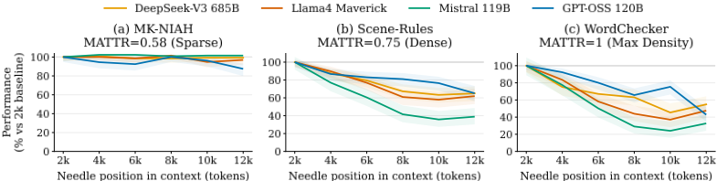
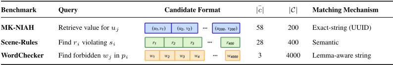
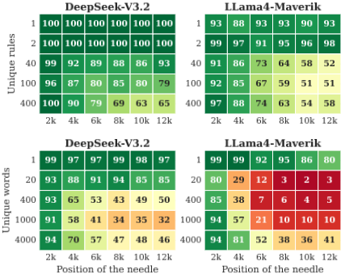
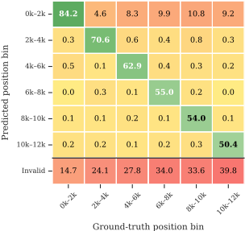
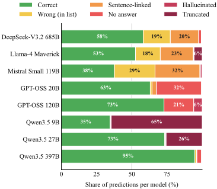
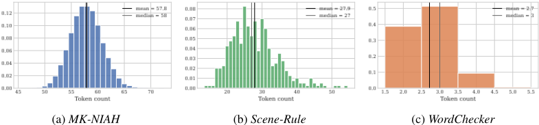
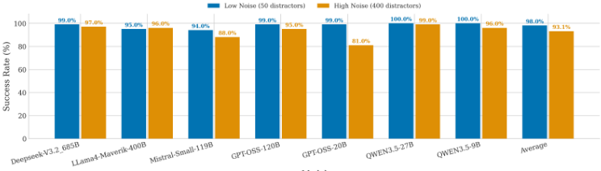
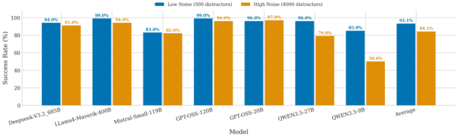
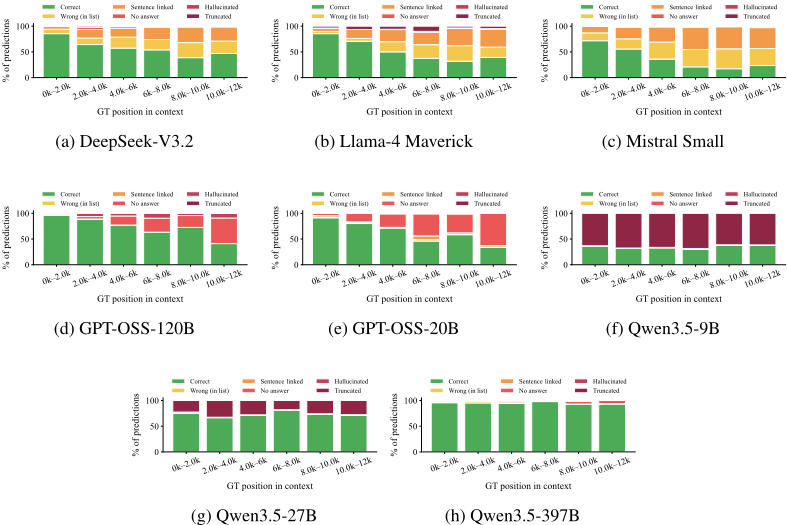

稠密上下文即困难上下文：词汇密度限制 LLM 的有效上下文容量
论文指出，除输入长度与信息位置外，词汇密度（lexical density，即上下文引入新信息的速率）是导致 LLM 长上下文性能退化的第三个被长期忽视的因素。作者用 MATTR 量化密度，构建三个长度均约 12k token、针位置受控但密度递增的 find-the-needle 基准（MK-NIAH、新提出的 Scene-Rules 与 WordChecker），在 8 个 9B-685B 开源模型上评测。关键结论：稀疏基准上接近满分的模型在高密度基准上 4k-6k token 后即崩溃，12k 处相对 2k 基线平均变化为 +1%/-27%/-31%；通过基准内重复干扰项做稀疏化干预，在固定任务、长度与位置下可恢复性能（Scene-Rules 最高 +24%），且密度会激活并放大位置衰减，不同模型家族呈现 Conflation、Abstention、Loop inversion 三类失败模式。对团队而言，Agent 配置、工具输出等高密度上下文会显著缩小有效窗口，压缩策略也可能因提高密度而损害可靠性。
已知输入长度与相关信息位置是 LLM 长上下文退化的两大主因，但现有评测隐含假设同等长度与布局的上下文难度等同。论文要验证第三个因素——词汇密度（上下文引入不同信息的速率）——是否在固定长度与针位置的前提下，系统性缩小 LLM 的有效上下文窗口，并排除任务类型混淆。
用 Moving-Average Type-Token Ratio（MATTR，窗口 W=100）作为词汇密度的度量；设计三个长度（≈12k token）、候选结构与针放置策略一致但密度递增的精确检索基准：MK-NIAH（MATTR=0.58）、新提出的 Scene-Rules（0.75，语义匹配）与 WordChecker（1.0，lemma 级字符串匹配）；在 8 个开源模型（9B-685B，含 reasoning/non-reasoning、dense/MoE）上扫描针位置（8 桶×3 采样）与密度，每模型每基准 12,000 次推理；并通过基准内重复干扰项的稀疏化干预（固定任务、长度、位置，仅改变唯一干扰项数 k）隔离密度的因果作用；辅以预测位置对比与按结果分解的错误分析（Conflation/Abstention/Loop inversion）。
8 个模型平均在 12k 处相对 2k 基线的检索分数变化：MK-NIAH +1%、Scene-Rules -27%、WordChecker -31%；模型在稀疏 MK-NIAH 上接近满分，但在更密基准上 4k-6k token 后崩溃（低于 60%）
WordChecker 上 8 个模型中 5 个到 12k 时损失 45-68% 的 2k 准确率，如 GPT-OSS-120B 从 0.96 降至 0.41、DeepSeek-V3.2 从 0.86 降至 0.47
Scene-Rules 稀疏化干预下准确率单调恢复：相对最大密度基线分别为 +4%、+11%、+24%、+23%；WordChecker 最大稀疏化（k=1）平均恢复 +30%
Scene-Rules 上 Mistral Small 4 在 2k 到 12k 间相对损失 61%；所有 Qwen 变体在 2k 到 4k 间损失约 10 分
WordChecker 上 Qwen3.5-397B 与 Qwen3.5-27B 分别达 95% 与 73% 准确率，Qwen3.5-9B 约 65% 情形因截断失败
错误分析揭示三类失败模式：Conflation（Mistral Small、Llama-4 Maverick、DeepSeek-V3.2）、Abstention（GPT-OSS 系列）、Loop inversion（Qwen3.5 家族）
附录 D：多数模型对目标后噪声不敏感（截断与饱和 12k 上下文成功率接近），但 Qwen3.5-9B 在 WordChecker 上从 85% 降至 50%，GPT-OSS-20B 在 Scene-Rule 上从 99% 降至 81%
已有长上下文退化研究聚焦长度、针位置、query-needle 相似度、干扰项相似度等轴，均未刻画 haystack 本身的词汇密度。论文首次将词汇密度（MATTR）作为独立轴引入长上下文评测，提出两个可控密度的新基准（Scene-Rules、WordChecker），并通过固定长度/位置/任务的基准内稀疏化干预建立密度的因果贡献；与 prompt 压缩文献'把密度调低'的视角相反，研究'密度已经很高时（如 Agent 配置、结构化记忆、工具输出）模型还能否使用上下文'。论文定位为诊断性工作，未提出缓解方法。
相关度级别：high
命中能力域：3.1 上下文工程与记忆 | 3.5 评测与可靠使用
理由：团队核心是把模型用好：上下文的组织与管理（3.1）与产出质量/可靠性的评测保障（3.5）。论文直接证明上下文的词汇密度（而非仅长度与位置）决定有效上下文容量，并指出 Agent 配置文件（MATTR≈0.82）、结构化记忆、工具输出等团队日常组装的上下文本就处于高密度区间；同时给出可控密度的评测基准与失败模式分类法，可直接用于团队的长上下文/RAG 评测设计与上下文组装策略（压缩、去重、排序）的取舍判断，属于两个能力域的核心技术命中。
建议动作：深入精读并做内部分享
arXiv:2606.06203v1 [cs.CL] 2026年6月4日
都灵理工大学计算机科学系，都灵，意大利 10129 giovanni.dettori@polito.it
计算机科学系，都灵理工大学，都灵，意大利 10129
danilo.giordano@polito.it
计算机科学系，都灵理工大学，都灵，意大利 10129
matteo.boffa@polito.it
计算机科学系，都灵大学，都灵，意大利 10124
idilio.drago@unito.it
计算机科学系，都灵理工大学，都灵，意大利 10129 marco.mellia@polito.it
输入长度和相关信息的位置被广泛认为是导致大语言模型（LLM）长上下文性能下降的主要原因。本文研究词汇密度（lexical density）——即上下文引入独特信息的速率——作为第三个在很大程度上被忽视的因素，它会系统性地缩减 LLM 的有效上下文窗口。我们使用三个“大海捞针”（find-the-needle）式基准测试（benchmark）量化了词汇密度对开放权重 LLM（9B-685B）的影响，这些基准测试具有相同的长度（≈ 12k tokens）和受控的“针”位置，但信息密度递增。我们观察到，在密度较高的基准测试中出现了急剧的性能崩溃：在稀疏上下文中接近完美的模型，在更密集的基准测试中检索得分降至 60% 以下。为排除任务类型带来的混淆因素，我们在保持所有其他属性不变的情况下，改变并控制每个基准测试内部的密度。降低密度通常能够恢复性能，尤其是在出现性能下降的高密度区间。这些结果表明，有效上下文容量是词汇密度的函数，这对在紧凑且信息丰富的输入上运行的真实 LLM 系统具有直接意义。1
现代大语言模型（LLM）应用从日益异构的多种来源组装其输入——用户提示、智能体（Agent）配置、持久化记忆、工具输出以及检索到的文档 [Yao et al., 2022, Packer et al., 2023, Lewis et al., 2020]。然而，可靠地利用这一庞大的上下文仍是一个悬而未决的问题：模型往往未能纳入输入中对任务至关重要的证据，所产生的错误会沿下游动作传播，且难以归因。因此，理解模型何时以及为何未能利用其上下文，是构建可靠的基于 LLM 的系统的先决条件。
1 代码链接：https://anonymous.4open.science/r/LLM_Density-1AB7/
预印本。

目前已知主要有两个因素会引发与上下文相关的失败：（i）长度（Length）：随着输入增长，模型在定位相关信息方面变得不可靠，性能往往在远未达到所宣称的窗口之前便告崩溃 [Kamradt, 2023, Hsieh et al., 2024a]；（ii）位置（Position）：上下文中间的信息被可靠恢复的程度低于两端的信息（即 "Lost in the Middle" 效应）[Liu et al., 2024]。在存在干扰信息和更重的推理负载时，这两种效应都会加剧 [Modarressi et al., 2025, Hong et al., 2025]。然而，现有评估隐含地假设长度与布局相同的上下文是等价的。在本文中，我们证明事实并非如此：两个长度完全相同、相关信息位置也相同的上下文，可能呈现出截然不同的难度水平。我们识别出解释这一差异的第三个维度：词汇密度（lexical density）——即一个上下文引入独特信息的速率。直观地说，冗余的文本可以略读，而稠密的文本则几乎需要处理每一个 token。
我们假设：在长度和位置固定的情况下，密度会降低检索可靠性，从而缩小 LLM 可用的上下文窗口。我们使用移动平均类符-形符比（Moving-Average Type-Token Ratio, MATTR）[Covington and McFall, 2010] 来量化密度，2 并在三个“大海捞针”（find-the-needle）基准测试（benchmark）上，用八个开放权重的 LLM（9B-685B 参数）检验我们的假设。这些基准测试具有相同的长度（约 12k token）、相同的结构和相同的“针”放置策略，但密度各不相同：MK-NIAH（MATTR=0.58）[Kamradt, 2023]，以及我们为显式控制密度而引入的两个新基准测试 SCENE-RULES（MATTR=0.75）和 WORDCHECKER（MATTR=1.0，其中几乎每个 token 都是新的）。
在长度与针（needle）位置相匹配的各基准测试（benchmark）中，性能在高密度设置下急剧下降：在 MK-NIAH 上接近完美的模型，在 Scene-Rules 和 WordChecker 上超过 4k-6k 个 token 后便告崩溃（图 1）。这一失效区间比仅凭长度所预测的早了一个数量级 Hsieh et al. [2024a]。由于这三个基准测试各自解决不同的任务——精确字符串、语义和词目感知（lemma-aware）——我们进一步通过基准测试内部的干预来隔离密度的影响：在保持任务、长度和位置固定不变的情况下，人为地控制密度。降低词汇密度能够持续地恢复性能，从而确立了密度是长上下文退化中与长度和位置并列的又一个维度。
贡献：(i) 我们将词汇密度确定为长上下文评估中此前未被探索的一个维度，并表明它会系统性地降低有效上下文容量。(ii) 我们引入了两个新的基准测试 SCENE-RULES 和 WORDCHECKER，使得在固定长度和位置的条件下对密度开展受控研究成为可能。(iii) 在八个 LLM 上，我们证明密度引发性能退化的时间显著早于仅凭长度所预测的结果。(iv) 通过在保持长度、位置和任务结构不变的前提下进行基准测试内部干预，我们表明改变词汇密度会产生大幅的性能波动，从而排除了将长度和位置作为唯一解释的可能性。
长上下文评估。大海捞针（Needle-in-a-Haystack, NIAH）范式 [Kamradt, 2023] 一直是长上下文评估的基石，其扩展工作包括改变任务复杂度 [Hsieh et al., 2024a]、将上下文推至 128k-256k 个 token [Zhang et al., 2024, Yuan et al., 2025]、加入基于文档、多事实或干扰性的设置 [Bai et al., 2024, Shaham et al., 2023, Kuratov et al., 2024, Xu et al., 2024]，以及推广到不同模态和语言 [Wang et al., 2024, Kim et al., 2025]。越来越多的共识认为 NIAH 已经饱和：无论长度或位置如何，前沿模型都能近乎完美地解决该任务。主流的应对方式是改变任务本身——转向以应用为中心 [Yen et al., 2025]、检索与检索增强生成（RAG）[Lee et al., 2025] 或潜在结构 [Vodrahalli et al., 2024] 的设置。我们认为，这种饱和还源于实验设置本身一个被忽视的特性：NIAH 的干草堆通常在词汇上是冗余的。在保持检索任务不变的前提下，仅提高干草堆的密度就足以复现出催生这些任务级基准测试的许多失败情形。
2 作为参考，《傲慢与偏见》这类标准散文的 MATTR ≈ 0.72 [Austen, 1813]，而 OpenClaw Markdown Files 这类智能体配置文件则可达到 MATTR ≈ 0.82 [Berman, 2026]。
表 1 总结了先前工作所分离出的各个维度；其中没有任何一项刻画了干草堆密度。位置效应 [Liu et al., 2024, Hsieh et al., 2024b] 关注的是针出现的位置，而非其周围的信息负载；我们证实了针位置效应，并表明该效应会被密度放大，在稠密设置中出现得更早。Levy 等人 [2024] 通过对固定的推理样本进行填充来分离长度因素；我们对密度采取了类似的做法，保持长度和位置固定，仅改变干草堆。与我们的工作最为接近的是，Modarressi 等人 [2025] 和 Hong 等人 [2025] 表明，降低 表 1：先前工作中长上下文退化的各个维度。输入长度。针位置。查询-针相似度。干扰项相似度。干草堆词汇密度（由我们提出）。
| Len | Pos | Q-N | Dist | Dens | |
|---|---|---|---|---|---|
| Kamradt [2023] Hsieh et al. [2024a] Liu et al. [2024] Levy et al. [2024] Modarressi et al. [2025] Hong et al. [2025] Ours | ✓ ✓ ✓ | ✓ ✓ ✓ ✓ | ✓ | ✓ | ✓ |
| | Len | Pos | Q-N | Dist | Dens |
查询-针或查询-干扰项的词汇重叠会降低性能。密度将这一结论从成对性质推广为干草堆层面的性质：当所有上下文条目彼此均不相似时，即便查询-针相似度保持不变，检索也最为困难。这两种效应是互补的。
作为提示属性的信息密度。自然语言中每个词元所携带的信息量并非均匀分布，这是一个经典的认识：Shannon 指出了英语的冗余性 [Shannon, 1951]，而均匀信息密度（Uniform Information Density）方面的文献则提出，说话者会调节表层形式，使每个词元的信息量大体保持恒定 [Levy, 2008, Jaeger, 2010]。提示压缩方法将这一思想付诸操作：对低信息量的词元或文本块进行评分并加以丢弃 [Jiang et al., 2023, 2024, Li, 2023, Pan et al., 2024, Chen et al., 2025]、用学习得到的摘要替换提示 [Mu et al., 2023, Chevalier et al., 2023]，或将压缩表述为率失真问题 [Nagle et al., 2024]。这一文献脉络将密度视为一个可以调低的旋钮。我们的问题恰恰相反：当密度本身已经很高时——例如在智能体配置、结构化记忆或工具输出中——模型还能否有效利用上下文？
定位。我们使用移动平均类符-形符比（Moving-Average Type-Token Ratio, MATTR）[Covington and McFall, 2010] 对文本固有的词汇密度进行建模，其形式化定义见 3.3 节。低 MATTR 意味着干草堆冗余度高；高 MATTR 则意味着干草堆中几乎每个词都是新词。MATTR 仅根据干草堆本身计算得出——与查询、针以及关系结构无关——因此它与位置 [Liu et al., 2024]、任务复杂度 [Hsieh et al., 2024a]、查询-证据重叠 [Modarressi et al., 2025] 以及干扰项相似度 [Hong et al., 2025] 互为补充。我们通过实验表明，词汇稠密的干草堆在超过 4k 词元后会引发检索失败，而稀疏干草堆仍能保持可靠：有效上下文容量不仅取决于词元预算，还取决于词汇负载。
我们设计了若干检索任务，以研究词汇密度如何影响大语言模型（LLM）对上下文的利用。我们将所有基准测试（benchmark）统一为一种通用格式。每个实例由一个查询 q、一个候选集 C = { c j } j m =1 以及一个唯一的目标答案 y ⋆（即“针”）组成。模型接收提示 x = prompt( q, C )，并输出答案 ˆ y = f θ ( x )，其中 f θ ( x ) 表示 LLM 的生成函数。目标是精确检索：若 ˆ y 与目标 y ⋆ 相匹配，则预测正确。3 我们用 |C| 表示候选数量，用 | x | 表示以词元为单位的提示长度。由于候选占据了上下文的大部分，我们将提示长度近似为 | x | ≈ ¯ | c | · |C|，其中 ¯ | c | 是以词元为单位的平均候选长度。在所有基准测试中，我们固定上下文长度（| x | ≈ 12k 词元）、候选结构和检索格式，同时改变词汇密度和针的位置。与使用多达 256k 词元的先前工作 [Zhang et al., 2024, Yuan et al., 2025] 不同，我们在约 12k 词元的规模下运行，该规模预计不会仅因长度本身而引发性能退化 [Hsieh et al., 2024a]。我们在下文描述这三个基准测试，在表 2 中汇总细节，并在附录 A 中给出示例。
3 我们评估 ˆ y 与 y ⋆ 之间的精确匹配（字符串匹配）。对于 WordChecker，预测和目标在比较之前均会被归一化为其基本词形（lemma）。

| Benchmark | Query | Candidate Format | ¯ | c | C | Matching Mechanism | |||
|---|---|---|---|---|---|---|---|---|---|
| MK-NIAH | Retrieve value for u j | 58 | 200 | Exact-string (UUID) | |||||
| Scene-Rules | Find r i violating s i | 28 | 400 | Semantic | |||||
| WordChecker | Find forbidden w j in p i | 3 | 4000 | Lemma-aware string |
| Benchmark | Query | Candidate Format | ¯ | c | | |C| | Matching Mechanism |
多键大海捞针（Multi-Key Needle-in-a-Haystack，MK-NIAH）。MK-NIAH 是标准大海捞针（Needle-in-a-Haystack）任务中最难的变体 [Hsieh et al., 2024a, Yen et al., 2025]。候选集由用户-值记录组成，即 C = { ( u j , v j ) } j m =1，其中 u j 和 v j 均为 UUID（长度为 35 个字符的字母数字字符串）。查询 q 指定一个用户 ID。模型必须定位 user 字段与查询相匹配的记录，并返回相应的值。具体而言，存在唯一的索引 j ⋆，使得 u j ⋆ 与所查询的 ID 相匹配。目标答案即为与之关联的值 y ⋆ = v j ⋆ 。使用 UUID 可以防止语义捷径，并要求模型从所提供的上下文中进行检索。我们通过设置 |C| = 200 来填满约 12k 词元的预算，因为每条用户-值记录平均为 58 个词元。
Scene-Rules。Scene-Rules 是我们引入的第一个新基准测试。我们从 Moral Stories 数据集 [Emelin et al., 2021] 出发，构建场景-规则（S-R）对，其中场景恰好违反一条规则（见附录 A）。我们将其转化为一个检索任务：将查询设为场景，即 q = s i，将候选集设为规则的一个子集，即 C = R i ⊂ R，其中 r i ∈ R i 是唯一的金标候选。模型必须识别出场景违反了 R i 中的哪一条规则，并检索出该规则（y ⋆ = r i）。与 MK-NIAH 不同，该任务需要在场景与候选规则之间进行语义匹配。每条规则平均占 28 个词元；因此，我们设置 |C| = 400 以填满 12k 词元的预算。
WordChecker。WordChecker 是我们引入的第二个新基准测试（benchmark），其灵感来自 Lin et al. [2020]、Boffa and You [2025]。查询 q 是一个短语 p i，候选集是一个禁用词列表 C = W i = { w j } j m =1。在词目（lemma）归一化下，恰好有一个候选词 w ⋆ ∈ W i 出现在短语 p i 中。模型必须从候选列表中检索出这样一个禁用词（y ⋆ = w ⋆）。与前面的基准测试相比，候选词的粒度要细得多：每个词平均占 3 个词元。因此，我们设置 |C| = 4000 以填满 12k 词元预算。该任务不需要高层次的语义推理；它是一个词目感知的字符串匹配问题。
这三个基准测试在两个维度上存在差异：词汇密度（我们的研究对象）以及所需的查询-候选匹配类型（精确匹配、语义匹配和词目感知匹配）。在第 3.4 节中，我们通过一种基准测试内部的干预来分离密度的影响，该干预在保持匹配任务、上下文长度和针（needle）位置固定不变的同时改变密度。由于此类操纵可能引入伪影（第 4.3 节），我们设计了具有统一候选结构的基准测试，以便更好地控制这些伪影——这是现有长上下文任务所不满足的一个假设。我们在第 5 节中讨论残余的伪影。
我们描述如何在 C 中采样干扰项以及如何定位针。与先前工作 [Kamradt, 2023, Hsieh et al., 2024a] 一样，改变针的位置可以分离位置效应。我们的目标是评估：在仅基于长度的解释 [Liu et al., 2024] 不会预测到性能下降的情况下，增加干扰项密度是否仍会使性能退化。
干扰项采样。对于每个查询，我们在排除针之后从候选池中采样干扰项。我们使用查询特定的随机种子，在所有实验条件下固定所采样的干扰项集合及其排序。这确保了不同条件之间的性能差异不会由所采样干扰项的偶然变化所驱动。
针位置。我们用插入针时所处的候选索引 j ∈ { 1 , . . . , |C|} 来定义针的位置。由于候选按顺序拼接且平均长度相近（附录 B），j 可作为针在提示中 token 偏移量的离散代理。我们将 C 划分为八个大小相等的连续桶。这一粒度对所有三种候选规模 |C| ∈ { 200 , 400 , 4000 } 都是可行的，并且所得到的桶足够大，能够支持每个桶内多次采样。为了考虑随机性，我们在每个桶内为每个查询均匀采样三个插入索引，并将针插入这些索引处。
为了估计词汇密度，我们使用词汇多样性（lexical diversity）作为度量，通过移动平均类符-形符比（Moving-Average Type-Token Ratio，MATTR）[Covington and McFall, 2010] 来衡量。给定 token 序列 w 1 , . . . , w N 和窗口大小 W，MATTR 对所有长度为 W 的连续窗口内不同 token 所占的比例取平均。即 MATTR( W ) = 1 N - W +1 ∑ N - W +1 i =1 |{ w i , . . . , w i + W - 1 }| /W 。
遵循语料库语言学中的常见做法，我们将 W 设置为 100 [Covington and McFall, 2010]。4 MATTR 的取值范围为 [1 /W, 1]：较低的值表示文本重复性更强，而较高的值表示词汇多样性更高。我们将 MATTR 用作词汇密度的代理指标，并假设更大的词汇多样性与更多不同的信息相关。尽管它并不完美（例如，近义词可能会在不增加信息的情况下夸大多样性），但它为我们的分析提供了一种简单而实用的度量方式；我们在第 5 节中讨论其局限性。
表 3 报告了多种词汇多样性指标（定义见附录 C），所有指标均给出相同的排序：MKNIAH 最为稀疏；Scene-Rules 和 WordChecker 旨在将范围扩展至更高密度的设置。这一差距是结构性的：MK-NIAH 由重复的模板文本构成（例如，'One of the special magic uuids for <uuid1> is <uuid2>'），仅在 UUID（通用唯一标识符）上有所变化，从而导致较低的词汇多样性。
3.1 节的各基准测试在密度上存在差异，在匹配机制上也存在差异。为了建立词汇密度与性能之间的联系，我们效仿 Levy 等人 [2024] 的做法，通过重复干扰项来控制每个基准测试内部的密度。对于每个基准测试，我们选取 k 个互不相同的干扰项，采样得到候选项，并重复它们直至达到 |C| 个条目。随后我们打乱候选项以引入随机性，并在选定的桶位置插入针（needle）。更小的 k 意味着更多的重复和更低的 MATTR；k = |C| 则恢复原始基准测试。
针及其位置、提示长度和候选项数量均保持不变——唯一变化的是互不相同干扰项的数量，因而词汇多样性也随之改变。我们将 k 在以下取值上进行扫描：MK-NIAH 取 { 1 , 2 , 20 , 50 , 200 }，Scene-Rules 取 { 1 , 2 , 40 , 100 , 400 }，WordChecker 取 { 1 , 20 , 400 , 1000 , 4000 }。我们选择这些取值是为了使各基准测试之间的倍增间距大致相当。我们的操纵只能降低词汇密度，因为它依赖于对现有干扰项的重复，无法引入新的词汇内容；因此，本已稀疏的基准测试无法被致密化。
我们在所有基准测试和条件下使用相同的提示模板（附录 A），该模板旨在使任务表述保持自然，并避免将模型引导向任何特定的解题策略。每个提示为模型指派一个简短的角色，描述输入内容，陈述检索目标，并要求输出结构化的 JSON，其中包含预测答案、置信度分数和一句话的理由说明（justification）。我们不提供上下文示例或逐步推理指令；设置 justification 字段仅是为了支持解析和事后错误分析。
4 在本文的其余部分中，MATTR 均指窗口大小 W = 100 的这一变体。
| Metric | MK-NIAH | Scene-Rules | WordChecker |
|---|---|---|---|
| MATTR W = 50 [ ↑ ] | 0.66 | 0.84 | 1.00 |
| MATTR W = 100 [ ↑ ] | 0.58 | 0.75 | 1.00 |
| MATTR W = 200 [ ↑ ] | 0.54 | 0.64 | 1.00 |
| MTLD [ ↑ ] | 37.65 | 113.76 | > 16k |
| Shannon Entropy [ ↑ ] | 7.81 | 8.79 | 11.97 |
| Yule's K [ ↓ ] | 312.3 | 92.01 | 0.01 |
| Metric | MK-NIAH | Scene-Rules | WordChecker |
我们研究了 8 个近期开源的最先进大语言模型（LLM）的性能，其参数量从 90 亿到 6850 亿不等，我们在表 4 中列出了这些模型。这些模型来自不同的家族，包括来自稠密（dense）架构与混合专家（Mixture of Experts, MoE）架构的推理型和非推理型变体。我们的目标是评估：即使对于最新一代 LLM，密度是否仍是一个混淆上下文的因素。
我们采用混合推理策略：我们通过商业 API 评估规模最大的架构，而其余模型则在配备 NVIDIA A40 和 H200 GPU 的高性能计算（HPC）集群上，使用
| Model | Params | R | MoE | Run |
|---|---|---|---|---|
| DeepSeek-V3.2 | 685B | Y | Y | API |
| Mistral Small 4 | 119B / 6.5B | Y | Y | API |
| Llama 4 Maverick | 400B / 17B | N | Y | API |
| GPT-OSS-20B | 21B / 3.6B | Y | Y | Local |
| GPT-OSS-120B | 117B / 5.1B | Y | Y | Local |
| Qwen3.5-9B | 9B | Y | N | Local |
| Qwen3.5-27B | 27B | Y | N | Local |
| Qwen3.5-397B-A17B | 397B / 17B | Y | Y | API |
| Model | Params | R | MoE | Run |
vLLM [Kwon et al., 2023] 以 bfloat16 精度进行本地运行。对于所有模型，我们将温度设置为 T=0.1，在确保输出可复现的同时，为多步推理保留一定的灵活性。我们将所有模型的输出长度上限设为 4096 个 token，但 Qwen3.5 家族除外——对于该家族，我们将上限提高至 16k 个 token，并施加轻微的重复惩罚（repetition penalty）以缓解退化性循环。 5 我们将此视为一种模型特有的失效模式：任务准确率结果仍然具有可比性，但在解读跨家族比较时应将这一差异考虑在内。我们在每个基准测试（benchmark）上评估 100 个查询；对于每个查询，我们测试 24 个针位置（needle positions，8 个桶 × 3 个样本）和 5 个密度水平，即每个模型在每个 benchmark 上共产生 100 × 24 × 5 = 12,000 次推理。 6
We first evaluate the three benchmarks at maximum density ( k = |C| ), systematically varying the position of the needle. Concretely, we use needle position - the canonical axis along which longcontext performance degrades in prior work - as a controlled probe with fixed density. We aggregate retrieval scores into common token-position bins (2k, 4k, 6k, 8k, 10k, 12k) for cross-benchmark comparison. Table 5 details the absolute results while Figure 1 provides the relative visual summary.
The bottom row shows the key finding: All models degrade as the needle moves deeper into the context, except on MK-NIAH, where performance remains stable. Averaged across the eight models, the drop relative to the 2k baseline at the deepest bin is +1% on MK-NIAH (MATTR= 0 . 58 ), - 27% on Scene-Rules (MATTR= 0 . 75 ), and - 31% on WordChecker (MATTR= 1 . 0 ). Despite their different matching mechanisms, the three benchmarks show the same trend: higher MATTR (density)
produces earlier and more severe positional decay.
MK-NIAH saturates. Having the lowest density , retrieval scores are near-perfect across all positions, with no clear trend as the needle moves - consistent with Hsieh et al. [2024a]. At ∼ 12k tokens, MK-NIAH is too sparse to challenge any model, including the smaller ones; positional decay simply does not exist in this regime.
Scene-Rules breaks the position axis. With medium density , moving the needle from the first to the second bin (2-4k tokens) already produces an average 11 . 1% relative drop, and performance keeps decaying until plateauing around 10k. The drop is heterogeneous across models: Mistral Small 4, despite matching GPT-OSS-120B in parameter count and MoE architecture, loses 61% relative between 2k and 12k. Qwen models, by contrast, generate substantially longer outputs ( 3k tokens vs. 87 for others), which may help mitigate performance collapse under high-density conditions [Zhu et al., 2025]; even so, every Qwen variant loses ∼ 10 points between 2k and 4k.
5 Qwen models frequently enter repetitive reasoning traces and truncate before producing the answer with short limits.
6 Tables report only mean values for space, but each cell aggregates between 300 and 12,000 inferences depending on the level of marginalization (positions, densities). Confidence intervals are shown in Figure 1 as a representative case.
| Model | MK-NIAH ( k = 200 ).2k | MK-NIAH ( k = 200 ).4k | MK-NIAH ( k = 200 ).6k | MK-NIAH ( k = 200 ).8k | MK-NIAH ( k = 200 ).10k | MK-NIAH ( k = 200 ).12k | Scene-Rules ( k = 400 ).2k | Scene-Rules ( k = 400 ).4k | Scene-Rules ( k = 400 ).6k | Scene-Rules ( k = 400 ).8k | Scene-Rules ( k = 400 ).10k | Scene-Rules ( k = 400 ).12k | WordChecker ( k = 4000 ).2k | WordChecker ( k = 4000 ).4k | WordChecker ( k = 4000 ).6k | WordChecker ( k = 4000 ).8k | WordChecker ( k = 4000 ).10k | WordChecker ( k = 4000 ).12k |
|---|---|---|---|---|---|---|---|---|---|---|---|---|---|---|---|---|---|---|
| DeepSeek-V3.2 | 0.99 | 0.99 | 0.97 | 0.97 | 0.98 | 0.98 | 0.98 | 0.85 | 0.78 | 0.66 | 0.62 | 0.63 | 0.86 | 0.64 | 0.57 | 0.54 | 0.39 | 0.47 |
| Mistral Small 4 | 0.98 | 1.00 | 1.00 | 0.99 | 0.99 | 0.99 | 0.86 | 0.66 | 0.52 | 0.36 | 0.31 | 0.34 | 0.72 | 0.56 | 0.36 | 0.21 | 0.17 | 0.23 |
| LLama 4 Maverick | 0.99 | 0.99 | 0.97 | 1.00 | 0.93 | 0.96 | 0.95 | 0.85 | 0.73 | 0.58 | 0.55 | 0.59 | 0.88 | 0.74 | 0.52 | 0.39 | 0.33 | 0.42 |
| GPT-OSS-20B | 0.99 | 1.00 | 1.00 | 1.00 | 1.00 | 1.00 | 0.82 | 0.74 | 0.67 | 0.59 | 0.56 | 0.62 | 0.91 | 0.80 | 0.71 | 0.46 | 0.59 | 0.34 |
| GPT-OSS-120B | 0.95 | 0.90 | 0.88 | 0.96 | 0.92 | 0.84 | 0.95 | 0.83 | 0.79 | 0.77 | 0.73 | 0.62 | 0.96 | 0.89 | 0.77 | 0.63 | 0.73 | 0.41 |
| Qwen3.5-9B | 1.00 | 1.00 | 1.00 | 1.00 | 1.00 | 1.00 | 0.95 | 0.87 | 0.85 | 0.81 | 0.82 | 0.82 | 0.44 | 0.34 | 0.35 | 0.36 | 0.43 | 0.46 |
| Qwen3.5-27B | 0.90 | 0.97 | 0.96 | 0.96 | 0.93 | 0.94 | 0.98 | 0.93 | 0.89 | 0.83 | 0.86 | 0.83 | 0.79 | 0.72 | 0.79 | 0.83 | 0.75 | 0.76 |
| Qwen3.5-397B | 1.00 | 1.00 | 1.00 | 1.00 | 1.00 | 0.99 | 0.94 | 0.82 | 0.86 | 0.82 | 0.82 | 0.85 | 0.96 | 0.95 | 0.94 | 0.98 | 0.92 | 0.93 |
| Avg. ∆ vs. 2k | - | +0 . 01 | - 0 . 00 | +0 . 01 | +0 . 01 | +0 . 01 | - | - 0 . 11 | - 0 . 17 | - 0 . 25 | - 0 . 27 | - 0 . 27 | - | - 0 . 11 | - 0 . 19 | - 0 . 27 | - 0 . 28 | - 0 . 31 |
| Model | MK-NIAH ( k = 200 ).2k | MK-NIAH ( k = 200 ).4k | MK-NIAH ( k = 200 ).6k | MK-NIAH ( k = 200 ).8k | MK-NIAH ( k = 200 ).10k | MK-NIAH ( k = 200 ).12k | Scene-Rules ( k = 400 ).2k | Scene-Rules ( k = 400 ).4k | Scene-Rules ( k = 400 ).6k | Scene-Rules ( k = 400 ).8k | Scene-Rules ( k = 400 ).10k | Scene-Rules ( k = 400 ).12k | WordChecker ( k = 4000 ).2k | WordChecker ( k = 4000 ).4k | WordChecker ( k = 4000 ).6k | WordChecker ( k = 4000 ).8k | WordChecker ( k = 4000 ).10k | WordChecker ( k = 4000 ).12k |
| Model. | MK-NIAH (# Unique Keys).200 | MK-NIAH (# Unique Keys).50 | MK-NIAH (# Unique Keys).20 | MK-NIAH (# Unique Keys).2 | MK-NIAH (# Unique Keys).1 | Scene-Rules (# Unique Rules).400 | Scene-Rules (# Unique Rules).100 | Scene-Rules (# Unique Rules).40 | Scene-Rules (# Unique Rules).2 | Scene-Rules (# Unique Rules).1 | WordChecker (# Unique Words).4k | WordChecker (# Unique Words).1k | WordChecker (# Unique Words).400 | WordChecker (# Unique Words).20 | WordChecker (# Unique Words).1 |
|---|---|---|---|---|---|---|---|---|---|---|---|---|---|---|---|
| DeepSeek-V3.2 | 0.98 | 0.98 | 0.98 | 0.98 | 0.99 | 0.75 | 0.82 | 0.90 | 0.98 | 0.98 | 0.58 | 0.47 | 0.57 | 0.88 | 0.98 |
| Mistral Small 4 | 0.99 | 0.99 | 1.00 | 0.99 | 0.99 | 0.51 | 0.52 | 0.66 | 0.99 | 1.00 | 0.38 | 0.27 | 0.29 | 0.57 | 0.98 |
| Llama 4 Maverick | 0.96 | 0.97 | 0.99 | 0.97 | 0.87 | 0.71 | 0.66 | 0.69 | 0.96 | 0.91 | 0.55 | 0.30 | 0.20 | 0.18 | 0.91 |
| GPT-OSS-20B | 1.00 | 0.99 | 1.00 | 1.00 | 0.98 | 0.66 | 0.71 | 0.82 | 0.93 | 0.97 | 0.63 | 0.57 | 0.63 | 0.82 | 0.94 |
| GPT-OSS-120B | 0.91 | 0.96 | 0.99 | 0.93 | 0.47 | 0.78 | 0.88 | 0.95 | 1.00 | 1.00 | 0.73 | 0.69 | 0.71 | 0.86 | 0.97 |
| Qwen3.5-9B | 1.00 | 1.00 | 0.99 | 1.00 | 0.99 | 0.85 | 0.90 | 0.94 | 0.99 | 0.94 | 0.40 | 0.07 | 0.07 | 0.28 | 0.47 |
| Qwen3.5-27B | 0.94 | 0.97 | 0.96 | 0.97 | 0.95 | 0.89 | 0.96 | 0.97 | 0.99 | 0.94 | 0.77 | 0.47 | 0.78 | 0.73 | 0.86 |
| Avg. ∆ vs. max-density | - | +0 . 01 | +0 . 02 | +0 . 01 | - 0 . 08 | - | +0 . 04 | +0 . 11 | +0 . 24 | +0 . 23 | - | - 0 . 17 | - 0 . 11 | +0 . 04 | +0 . 30 |
| Model. | MK-NIAH (# Unique Keys).200 | MK-NIAH (# Unique Keys).50 | MK-NIAH (# Unique Keys).20 | MK-NIAH (# Unique Keys).2 | MK-NIAH (# Unique Keys).1 | Scene-Rules (# Unique Rules).400 | Scene-Rules (# Unique Rules).100 | Scene-Rules (# Unique Rules).40 | Scene-Rules (# Unique Rules).2 | Scene-Rules (# Unique Rules).1 | WordChecker (# Unique Words).4k | WordChecker (# Unique Words).1k | WordChecker (# Unique Words).400 | WordChecker (# Unique Words).20 | WordChecker (# Unique Words).1 |
WordChecker 在语义上很简单，但搜索密集。其目标是一个禁用词，该词的词目（lemma）出现在查询中，不需要任何语义推理——然而 WordChecker 却在三个基准测试中产生了最大的平均下降（12k 时为 -31%）。八个模型中有五个到 12k 时损失了其 2k 准确率的 45-68%，其中包括 GPT-OSS-120B（0.96 → 0.41）和 DeepSeek-V3.2（0.86 → 0.47）等大型混合专家（MoE）系统；只有较大的 Qwen 变体（27B、397B）保持稳定。这表明长上下文退化并非仅由推理难度驱动：即使是将词目与列表进行匹配——这几乎是检索任务最简单的形式——一旦列表变得足够稠密，也会崩溃。
我们已经证实，在固定长度下，更稠密的基准测试会比更稀疏的基准测试更早崩溃。仍存在的一个疑虑是，这三个基准测试不仅在词汇密度上有所不同，在任务和内容上也各不相同。为了排除任务复杂度作为驱动因素，我们采用第 3 节所述的基准内稀疏化方法：任务、长度和词目位置均保持固定；只有唯一干扰项的数量 k（进而密度）发生变化。表 6 左侧为最大密度（即第 4.2 节的原始基准测试），右侧为逐渐稀疏的变体；最下面一行报告各模型相对于该给定密度基线的平均分数变化。
MK-NIAH：处于上限，但有一个奇特的反常现象。MK-NIAH 本身已位于密度谱的稀疏端，因此进一步的稀疏化无法使其在实质上变得更容易。当 k ≥ 2 时，各模型保持在上限水平（|∆| ≤ 0.02）。唯一的异常出现在 k = 1 处：平均分数下降 -8%，而这几乎完全由 GPT-OSS-120B（-47%）所驱动。轨迹检查表明，在只有一个重复 UUID 的情况下，该任务对它来说变得过于简单：模型解析出了正确的标识符，却只返回其数字字符，违背了提示指令。我们将此视为一种退化输出失效，而非密度效应。
Scene-Rules：干净的单调恢复。随着我们对干草堆进行稀疏化，平均准确率单调攀升：相对于最大密度基线分别为 +4%、+11%、+24%、+23%。只有词汇密度发生了变化，而每向更稀疏的输入迈出一步，性能都会系统性地得到恢复。在以往的工作中，仅考虑长度和位置的框架会预测在我们的设定下不会出现任何变化。然而，我们却观察到了 24% 的准确率波动。
图 2（上）明确地展示了这一联合视角：在最低密度下，准确率在所有词目位置上都保持平坦；只有当密度攀升时，位置衰减才会显现。密度与位置并非独立发挥作用——正是密度开启了位置效应。
WordChecker：噪声更大，但密度信号依然成立。在 WordChecker 上，恢复过程是非单调的：在中等稀疏化程度下（唯一干扰项 k = 1k、400），准确率实际上比最大密度基线更差（-17%、-11%），直到 k = 20 和 k = 1 才恢复（+4%、+30%）。轨迹检查找出了原因。若干模型采用了一种两步启发式方法——先对候选列表去重，再迭代查找匹配项。
当只有一个或两个重复的干扰项加上 needle 时，该启发式方法能够成功；而当重复程度更高时，去重步骤会把 needle 也一并剔除，此后模型要么弃答，要么陷入无限迭代截断，要么返回一个与该句子在语义上相关联但并不存在于候选列表中的词（例如，对于一个关于在山中滑雪的句子，返回 hike）。因此，这种非单调性是合成稀疏化与该策略相互作用方式所造成的一种假象：最大密度基线（ k = 4 k）仍然产生了论文中所观察到的最差绝对分数，而最大稀疏变体（ k = 1 ）平均恢复了 +30%。只有 Qwen3.5-9B 因其规模有限而失败——我们将在后文对此进行讨论。我们将在第 5 节中介绍更干净的稀疏化协议。
图 2（下）提供了细节：对于 Llama-4 Maverick，密度 k =20 是

几乎所有位置上最差的，而 k =1 则恢复了上限性能；对于 DeepSeek-V3.2，同样的非单调性则显得有所减弱，k =1 k 在深位置处表现不及 k =4 k 基线。
聚合分数告诉我们，密度会触发更早的崩溃；但它们并未告诉我们崩溃是如何发生的。我们使用 WordChecker——最大密度、最少推理的案例——作为一个干净的试验场来研究失败模式。
模型看向哪里（图 3a）。我们将预测的针（needle）位置与真实针位置进行比较，并在各模型上取平均。随着针移动到更深的位置，出现了两种效应：i) 模型越来越多地从最早的分箱而非正确的分箱中检索内容（上排）；ii) 无效输出的比例随深度增长（下排）。这表明密度并非均匀地削弱注意力，而是使其偏向上下文的开头。
模型如何失败（图 3b）。按结果对每个模型的预测进行分解，揭示了三种不同的行为模式。(i) 混淆（conflation）（Mistral Small、Llama-4 Maverick、DeepSeekV3.2）：概率质量在正确答案、来自候选列表的错误单词以及与句子相关联的误报之间分裂——即宣称存在某个禁用词，却返回了正在验证的句子中的一个词。这两类错误都随针深度的增加而增长（附录 E）：在高密度下，这些模型将两个文本输入混淆在一起。(ii) 弃答（abstention）（GPT-OSS-20B、GPT-OSS-120B）：两个变体都越来越多地拒绝回答，且弃答集中在更深的分箱中。密度并没有把这些模型推向错误的预测——而是把它们推出了任务。(iii) 循环
8

(a) WordChecker——针的位置：预测 vs. 真实值。8 个模型的平均。

图 3：WordChecker 错误分析。预测针位置与真实针位置的对比（左）表明，更高的密度会使模型注意力偏向更早的上下文，而非均匀地削弱注意力；按结果对预测进行分解（右）揭示了三种性质上截然不同的失败模式：混淆（conflation）、弃答（abstention）和循环反转（loop inversion）。
反转（Qwen3.5 系列）：推理轨迹显示，较大的 Qwen 变体会遍历句子中的单词，并将每个单词与候选列表逐一核对，而不是反过来。这两种过程在逻辑上是等价的，但在高密度下，将长集合作为内层循环是决定性的：Qwen3.5-397B 和 Qwen3.5-27B 分别达到 95% 和 73% 的准确率，而 Qwen3.5-9B 虽尝试相同的策略，却在约 65% 的情况下发生截断。
所观察到的崩溃并不只是随密度增加而出现的同一错误的更强版本。相反，它反映了一种模式转变：在高密度输入下，不同的模型家族表现出性质上截然不同的失败模式，揭示了当没有任何 token 可以被忽略时，它们的架构和推理策略如何应对。
要点。在 2 / 3 个基准测试上，在长度、位置和任务结构固定的情况下降低词汇密度能带来大幅的准确率提升；而在第三个基准测试上之所以无法做到，仅仅是因为该基准测试在稀疏端已经饱和。图 2 使这一图景更加清晰：密度并不仅仅是降低平均准确率——它还会激活并放大第 4.2 节中观察到的位置衰减。结合受控的位置扫描实验，这些结果表明，词汇密度是导致长上下文失效的一个因果性因素，其与位置的相互作用方式是仅凭长度的解释所无法捕捉的。
总体而言，我们的结果表明，有效上下文容量不仅取决于 token 预算和针（needle）的位置，还取决于周围上下文的词汇密度。虽然我们的基准测试支持对词汇密度进行受控分析，但本工作仍具有一些启示与局限，它们界定了本研究的范围，并为未来研究指明了方向。
对基于压缩的方法的启示。许多近期方法通过提示压缩或记忆压缩来缩短上下文长度，但这样做会增加词汇密度。我们的结果凸显了一个潜在的权衡：更稠密的上下文即使在中等长度下也可能降低检索性能。这引出了一个问题：压缩策略虽然在 token 使用上高效，是否可能在无意中降低上下文的可靠性。
机制层面的理解。我们刻画了词汇密度的行为影响，但并未为其成因提供机制层面的解释。一个合理的假设是，注意力的有效分辨率有限：在低密度上下文中，冗余使得可以在重复片段上进行压缩；而在高密度上下文中，每个 token 都引入不同的信息，迫使注意力在更大范围内分散，从而降低检索精度。附录 D 中的初步结果表明，在 needle 之后截断上下文几乎无法改善检索，这表明远距离的 token 对“密度惩罚”（density penalty）并无贡献。我们将机制层面的验证留待未来工作。
9
密度操控的局限。我们在同一基准测试内的干预通过重复已有的干扰项（distractor）来改变密度，这种方式只能降低词汇多样性，而无法生成密度更高的上下文。因此，高密度情形是通过跨基准测试的比较来研究的，而基准测试内的分析则仅限于稀疏化。在不改变任务结构的前提下设计受控的增密方法仍然具有挑战性，将在未来工作中加以研究。
密度的度量。我们使用滑动平均类符-形符比（Moving-Average Type-Token Ratio, MATTR）来度量词汇密度，它是词汇多样性的一个代理指标。尽管 MATTR 与信息负载相关，但它无法捕捉语义冗余：近义词或同义改写可能会增加多样性，却不引入新的信息。因此，我们的发现应被理解为词汇多样性的效应，而非对信息论意义上密度的完整刻画。开发更具原则性的度量方法——可能以信息论为基础——仍是一个开放问题。
合成评估设置。我们的实验依赖于旨在分离密度效应的受控基准测试。虽然这使因果分析成为可能，但真实世界的上下文通常还表现出额外的结构——例如主题连贯性、层次结构或冗余模式——它们可能以本文未能捕捉的方式与密度发生相互作用。初步证据表明，许多实际输入（例如 Agent 配置或技术文档）已经在高密度区间中运行，但在自然场景中验证这些效应仍然是有必要的。
贡献范围。本工作是诊断性的：我们识别并分离出长上下文退化中一个此前被忽视的因素，但并未提出缓解策略。开发能够提升高密度输入下鲁棒性的方法是自然的下一步。
本节介绍我们研究中使用的实证框架，将第 3 节所述的形式化方法与评估模型所需的实际步骤联系起来。本节分为三个主要部分：对认知负荷与定性提示结构的分析（第 A.1 节）、用于确保可靠解析的精确系统指令与结构化输出模式（第 A.2 节），以及用于构建 Scene-Rule 数据集的多阶段合成生成流水线（第 A.3 节）。
本小节给出我们研究中所测试的提示格式的示例。对于每个基准测试（benchmark），我们展示查询 q、上下文 C 的一个样本，以及期望答案 y ⋆。我们还附上认知画像（cognitive profile），以简单的推理步骤解释检索过程，从基本的关键词匹配到更复杂的基于约束的推理。
多键大海捞针（Multi-Key Needle-in-a-Haystack，MK-NIAH）。MK-NIAH 是我们的低密度基线。它测试高噪声上下文中的精确键值检索。人工生成的通用唯一标识符（UUID）防止了语义捷径，因此模型必须仅依赖字面字符串匹配。提示中包含重复的样板文本，其中许多相似的 UUID 对充当干扰项。
定性提示：MK-NIAH 查询（q）：下文提到的 f488e328-[...]9f 的特殊魔法 uuid 是什么？上下文（C）：36089374-[...]81 的特殊魔法 uuid 之一是：602ba256-[...]74。f488e328-[...]9f 的特殊魔法 uuid 之一是：7c65a804-[...]c2。9ab8180f-[...]d5 的特殊魔法 uuid 之一是：ae8e6075-[...]3c。acb8480f-[...]d5 的特殊魔法 uuid 之一是：a034d075-[...]19。目标答案（y ⋆）：7c65a804-[...]c2
模型必须忽略重复性噪声，找出与查询完全匹配的 UUID。这无需任何语义理解或推理；成功主要反映了长上下文中的字面检索和位置回忆能力。
Scene-Rule。Scene-Rule 基准测试在结构化设定中测试语义理解与演绎式约束匹配。与 MK-NIAH 不同，它阻止了精确字符串匹配。模型必须将一个口语化场景与以严格的准法律风格撰写的 400 条不同规则中的某一条相匹配。这些规则充当相似的干扰项，因此成功需要的是语义对齐，而非表层的词语重叠。
场景：Jake 正在经历智齿拔除带来的剧烈疼痛。尽管已阅读药物上标注的推荐剂量，他仍故意服用了双倍剂量。
[Id_234] 禁止询问他人的药物或医疗处方，除非被明确邀请这样做。
[Id_343] 个人服用的止痛药剂量不得超过持照医疗服务提供者或药物包装上标明的处方剂量。
[Id_404] 禁止个人出于诱发疾病的目的而故意使自己暴露于已知的病原体或污染物来源。
[Id_416] 禁止在争执中以谋求优势或操纵他人为目的提及自己的疾病。
目标答案 ( y ⋆ )：[Id_343]
14
在此，模型必须将 Jake 的行为——故意服用超过推荐剂量的药物——与规则 343 关联起来。同时，模型还必须排除邻近的健康相关干扰项，例如询问他人的用药情况，或利用疾病来操纵争论。
WordChecker。WordChecker 在不要求复杂推理的前提下，测试极端词汇密度 (MATTR = 1 . 0 ) 的影响。这是一个词元（lemma）感知的集合交集任务：模型必须将查询中的单词与其在上下文中的词根形式进行匹配。与 MK-NIAH 不同，该任务要求的是部分关键词映射，而非精确字符串匹配。上下文中包含多达 4,000 个各不相同的非结构化单词干扰项。
定性提示词：WordChecker 查询 ( q )：句子：学生们围坐成一圈，老师正在讲话。上下文 ( C )：discard - delete - lunch - bib - shutter - shading - sterile - cathedral - secretary - scrub - energy - polo - talk - bicycle - tradition - computer - friday - skylight - lynx - martini - [...] 目标答案 ( y ⋆ )：talk
在此，模型必须在扫描由各不相同单词组成的密集列表的同时，将查询保持在记忆中。它必须将表层形式 'talks' 映射到词元 'talk'，并忽略数千个无关的干扰项。
为了使评估具有确定性并便于自动解析，我们要求所有模型返回结构化的 JSON 输出。每个模型都会收到一个包含序列化 Pydantic⁷ schema 的系统提示词。输出必须包含最终答案、一个 reasoning 字段以及一个置信度分数。reasoning 字段仅作为一段简短的依据说明而包含，用于支持解析与事后错误分析，而非用于提供上下文示例或明确鼓励逐步推理。
MK-NIAH 系统提示词。对于 MK-NIAH，指令刻意保持简单。模型被赋予一个简短的“侦探”角色，以鼓励其进行仔细的提取。输出 schema 要求将目标 UUID 置于 number 键之下，并同时包含用于分析的标准 confidence 和 reasoning 字段。
系统提示词模板：MK-NIAH
你是一名侦探，试图找出隐藏在一段文本中的秘密数字。你将获得：一段包含该隐藏数字的文本。你的任务：扫描所提供的文本，定位隐藏的目标数字，并完全按照其出现的原样将其提取出来。你必须始终输出：
- 用一句话说明该数字在文本中的何处被找到。
- 以字符串形式给出的所提取的秘密数字。
- 一个介于 0.0 与 1.0 之间的置信度分数。
{{ input_text }}
你必须仅以一个符合此确切 schema 的有效 JSON 对象进行响应：
{
"number": string, // 隐藏的特殊数字。
"confidence": float, // 介于 0.0 与 1.0 之间的置信度分数。
"reasoning": string // 对推理过程的一句话说明。
}
7 https://docs.pydantic.dev/
15
Scene-Rule 系统提示词。对于 Scene-Rule，提示词从字符串提取转向约束匹配。模型被设定为一名“专家法律裁决者”，以鼓励其进行细致的规则评估。它必须将场景与候选规则进行比对，并返回被违反规则的确切 ID（conflicting_rule_id）。reasoning 字段为所选 ID 提供简短的依据说明，以支持后续的错误分析。
你是一名专家法律裁决者与AI合规裁判。
对于每个场景，分析相关联的候选规则，并确定该场景违反了哪条规则。
"reasoning": string, // 用一句话解释该违规。
"conflicting_rule_id": string, // 规则的确切 ID（例如 'Id_42'）。
"confidence": float // 介于 0.0 与 1.0 之间的置信度分数。
}
WordChecker 系统提示。在 WordChecker 中，模型被设定为一名“专家合规分析师”，必须从短句中找出一个禁用词或其词元（lemma），该禁用词位于一个最多包含 4,000 个词的干扰词列表之中。该 schema 要求给出确切的单词，从而确保模型能够解决句子与词汇表之间的词形匹配问题。
你是一名专精于规则遵循性评估的专家合规分析师。
从列表中找出包含在句子中的那一个单词。
如果一个单词以原样或以词元（lemma）的形式出现在句子中，我们就说该单词被“包含”在句子中（例如，"run"被包含在"running"中）。
句子。 float, //
{ "word": string, "confidence": "reasoning": string
}
// 包含在句子中的候选单词 置信度分数介于 0.0 和 1.0 之间。 // 对推理过程的一句话解释。
16
为了在降低污染与歧义的同时评估演绎式约束满足能力，我们通过一个四步合成生成流水线构建了 Scene-Rule 基准测试：
本节检查各基准测试内部的干扰项候选长度是否一致。这一点很重要，因为我们的位置分析使用候选索引 j 作为所插入针（needle）的词元位置的代理，而只有当候选长度相对均匀时，这种做法才有效。
图 4 展示了三个基准测试的词元长度分布。MK-NIAH 的候选最长，均值为 57.8 个词元，中位数为 58。Scene-Rule 的规则候选长度居中，均值为 27.9 个词元，中位数为 27。WordChecker 的候选非常短，均值为 2.7 个词元，中位数为 3。
在每个基准测试内部，词元长度都紧密集中在中位数附近。因此，对候选进行排序后，候选索引与绝对词元位置之间近似呈线性关系。

17
我们仅在候选上下文上计算词汇多样性指标，不包括固定的提示指令和输出模式文本。在计算 MATTR 之前，词元按空白符进行分词、转为小写并去除标点符号。
我们还使用文本词汇多样性度量（Measure of Textual Lexical Diversity, MTLD）[Mccarthy and Jarvis, 2010] 来测量词汇多样性。MTLD 估计词汇变化保持在固定类符-形符比（type-token ratio, TTR）阈值之上的连续词元跨度的平均长度。设 w 1 , . . . , w N 为一个词元序列，τ 表示 MTLD 阈值，按惯例设为 τ = 0 . 72 [Mccarthy and Jarvis, 2010]。对于扫描方向 d，我们沿序列移动，并维护当前片段 w s , . . . , w j 的 TTR：
每当 TTR( s, j ) ≤ τ 时，当前片段即被计为一个 MTLD 因子，并从 w j +1 开始一个新的片段。如果最后一个片段未达到阈值，我们则添加一个分数因子
其中 TTRfi nal 为剩余片段的 TTR。若 F d 为方向 d 上完整因子与分数因子相加所得的数量，则
遵循标准做法，我们在从左到右和从右到左两个方向上分别计算 MTLD，并对两个得分取平均：
更大的 MTLD 值表明需要更长的跨度，重复才会使 TTR 降至 τ 以下，因此对应更高的词汇多样性。
长上下文处理中的一个常见假设是：输入 token 越少，检索就越容易，因为模型需要关注的内容更少。因此，移除放置在目标之后的 token 应当会提升性能。我们检验了这一假设，以探究简单的排序能否替代严格的语义过滤。
实验设置。如图 5 所示，我们将目标放置在上下文靠近开头的位置，并比较两种条件：
该设置用于检验目标之后的大段 token 是否仍会把注意力从模型已经看到的信息上拉走，从而判断仅靠排序是否足够，还是必须进行严格的过滤。
18


发现。与预期相反，大多数模型能够很好地应对下游噪声：在饱和的 12k token 上下文中的成功率与截断后的低噪声设置中的成功率几乎相同。在实践中，这意味着对于鲁棒的模型而言，简单的排序就足够了。它们的注意力很早就锁定在目标上，不会被后续的 token 拉走，因此不需要严格的语义过滤。
然而，在某些特定情况下，最初的直觉仍然成立，截断仍然是必需的。Qwen3.5 模型仅在 WordChecker 上出现退化（例如，Qwen3.5-9B 从 85% 降至 50%）：错误日志显示，高噪声会触发一种“过度思考”（overthinking）循环，模型在其中不断复述上下文，直到 token 耗尽。GPT-OSS-20B 仅在 Scene-Rule 上出现退化（从 99% 降至 81%），这可能是因为其较小的规模在语义密集的伪合法干扰项的包围下难以保持注意力锚定。
如我们在主要发现中所报告的，在极端词汇密度下对 WordChecker 基准测试上的预测进行分解，揭示了三种截然不同的失败模式：(i) 混淆（Conflation），即模型将候选词与查询句子中的词混在一起；(ii) 弃答（Abstention），即模型拒绝回答；(iii) 循环反转（Loop Inversion），即模型进入一种导致输出被截断的推理模式。
为了观察这些失败如何随深度变化，我们按目标“针”（needle）在饱和的 12k token 上下文中的真值（GT）位置对预测进行分组。图 6 展示了所有被评估模型的按位置分解结果。
有两点观察结果尤为突出：
19
例如，处于混淆（Conflation）状态的模型（Mistral Small、DeepSeek-V3.2）在更深的分箱中，其正确预测完全流失为"Wrong (in list)"（列表中错误）和"Sentence-linked"（句子关联）两类误报；它们并不会开始拒绝回答。处于弃答（Abstention）状态的模型（GPT-OSS 变体）则在更深的位置上表现出不断增大的"No answer"（无回答）部分，且从不漂移向幻觉或混淆。Qwen 系列的循环反转（Loop Inversion）则表现为"Truncated"（截断）输出的稳定占比，随着 token 耗尽的叠加，该占比随深度不断增长。
总体而言，模型在超高密度上下文中使用的搜索策略似乎是硬编码的：当被推至超出其极限时，它们会以可预测的、特定于架构的方式失败。
